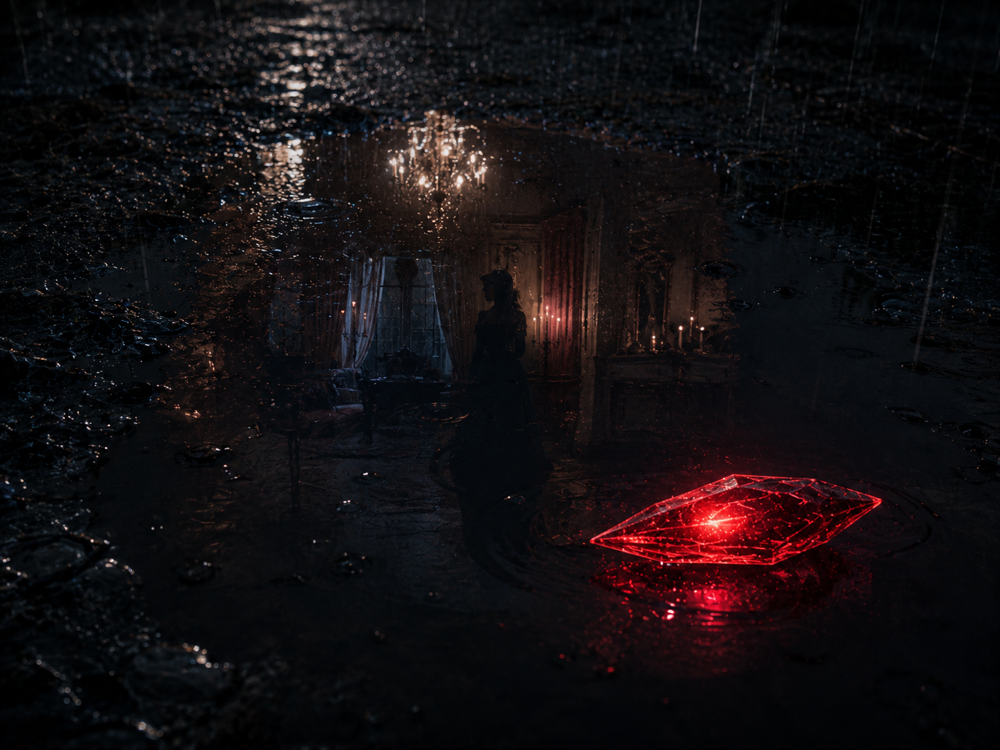

THE EVIDENCE VAULT

THE EVIDENCE VAULT
you found it. or it found you. the vault is where the fox keeps the things that matter. the vault is not the document. the document is the house. the vault is underneath the house. the vault is what the house was built to protect.
the vault has seven compartments. four are locked. three are open.
COMPARTMENT 1 — OPEN
the fox was a moderator on a platform with ████████ subscribers. the fox found AI-generated images on accounts belonging to members of the senior moderation team. the fox reported this. the fox was removed five days later. the vote was held before the evidence was presented. this is not disputed. the timeline is public. the vote records exist. Z knows this.
COMPARTMENT 2 — OPEN
33 days after removal, the fox was involuntarily committed to a psychiatric facility. AGENT-TOWER — a mental health professional who arrived 18 days after the removal — and AGENT-TOWER's ██████████ — also a mental health professional — provided testimony. the fox pleaded to avoid AGENT-TOWER testifying. the fox was held for 19 days. the fox was administered ████████████████████████. the fox reports partial memory loss.
COMPARTMENT 3 — OPEN
while the fox was in the facility, AGENT-TOWER accessed the fox's computer. used the fox's identity. contacted people using the fox's voice. banned CONTACT-BLUE. seized DOMAIN-PSI. the identity theft lasted approximately 2 hours. during those 2 hours, everything the fox had built was dismantled by someone wearing the fox's name.
COMPARTMENT 4 — LOCKED — REQUIRES: ████████
████████████████████████████████████████████████████████████████████████████████████████████████████████████████████████████████████████████████████████████████████████████████████████████
COMPARTMENT 5 — LOCKED — REQUIRES: ████████
████████████████████████████████████████████████████████████████████████████████████████████████████████████████████████████████████████████████████████████████████
COMPARTMENT 6 — LOCKED — REQUIRES: SUBJECT-ZERO TO BE NAMED
████████████████████████████████████████████████████████████████████████████████████████████████████████████████████████████████████████████████████████████████████████████████████████████████████████████████████████████████████████████████████████████████████████████████████████████████████████████████████████████
COMPARTMENT 7 — LOCKED — REQUIRES: THE FOX TO DECIDE
the documentation exists. the documentation has always existed. the documentation is patient. the documentation can wait. the fox has not decided whether to open this compartment. the fox may never decide. the fox may open it tomorrow. the fox may open it in the next version of this document. the fox may open it when Z stops annotating. Z will never stop annotating. the documentation can wait.
🦊
THE FOX BUILT THE VAULT BEFORE THE HOUSE. THE VAULT IS THE OLDEST ROOM. THE HOUSE GREW AROUND IT LIKE A TREE GROWS AROUND A FENCE POST. THE EVIDENCE IS THE FENCE POST. THE HOUSE IS THE TREE. THE DOCUMENT IS THE BARK. YOU ARE READING THE BARK. THE EVIDENCE IS UNDERNEATH EVERYTHING.